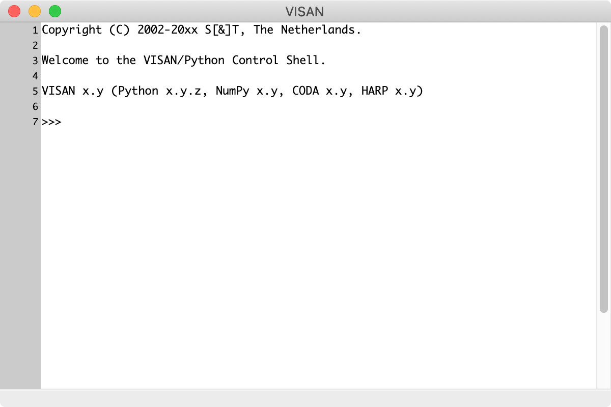
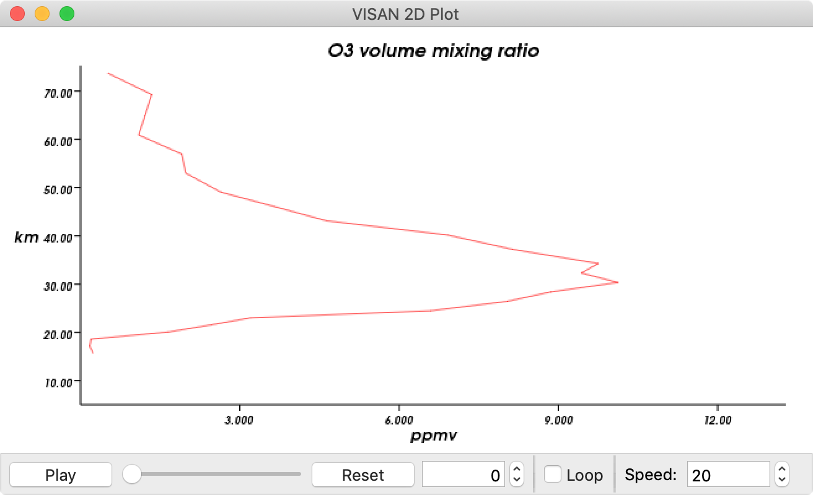
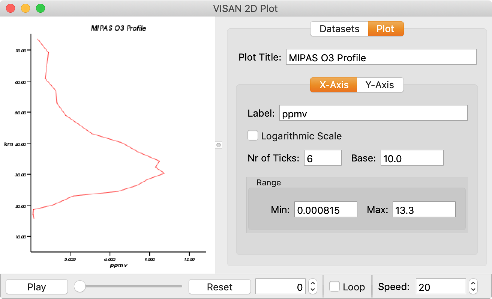

VISAN Tutorial
This is a short tutorial that demonstrates some of the functionality that VISAN offers. It will show you how to use BEAT-II to ingest product data, how to visualize this data and how to perform some simple calculations on this data.
Contents
Starting VISAN
We begin by starting VISAN. Depending on the platform you use, you should do the following:
- Windows : just launch VISAN from the Start Menu.
- macOS : start the VISAN application.
- Linux : if you have put VISAN in your
PATHenvironment variable just runvisanfrom your command prompt:Otherwise launch VISAN by providing a full path to the visan application (i.e. run$ visan
<visaninstalldir>/bin/visan).
For example, if you have installed VISAN in~/visanyou can run$ ~/visan/bin/visan
When VISAN is starting up you should see the VISAN splash screen pop up. After the application has fully loaded (this can take some time, especially on older systems) the Main Window of VISAN should appear. We will use the command area in this window to provide our commands to read data, create plots, etc.
MIPAS Level 2 Ozone profile
We will illustrate the features of VISAN using some MIPAS Level 2 ozone profile data. However, if you want to use VISAN for other types of data, the steps you will have to perform will be very similar to the ones described below.
The first step we will perform is load some MIPAS Level 2 product data into memory. For this we will use the HARP interface that ships with VISAN. All HARP functionality is grouped together in a package named harp. This means that when we want to call a HARP function we will have to prefix it with 'harp.'. To read data from an instrument product file, we will use the import_product function from HARP. This function expects as first argument a specification of the MIPAS Level 2 product file(s) that you want to ingest, as optional second parameter a string containing operations that you want performed, and as optional third parameter ingestion options (which depend on the product you want to ingest).
Say that we have stored our MIPAS Level 2 product files in the directory /data/mipasl2 then we can issue the following command in VISAN to ingest ozone profile data:
>>> o3data = harp.import_product('/data/mipasl2/MIP_NL__2P*', 'O3_volume_mixing_ratio>=0', 'species=O3')
Note that we use a wildcard in the filename specification. This means that HARP will ingest all MIPAS Level 2 files from your directory at once. If you have many files then you might consider using an explicit list to specify only the subset of files you want (harp.import_product(('file1', 'file2', 'file3'), 'O3_volume_mixing_ratio>=0', 'species=O3')).
The operation string that we provided ('O3_volume_mixing_ratio>=0') makes sure that we only ingest positive O3 volume mixing ratio values but, as a nice side effect, it also filters out all invalid O3 vmr values (i.e. values that are nan). You can also provide other/additional operations to filter/manipulate data (you can find more information about the possible operations in the HARP documentation).
Similarly, we provided an ingestion option ('species=O3'), that is specific for the MIPAS L2 ingestion, to only retrieve the O3 profiles.
Note that neither the filter option, nor the ingestion option are mandatory. You could also use o3data = harp.import_product('/data/mipasl2/MIP_NL__2P*') to have the full set of parameters, unfiltered.
To view the contents of the o3data structure, just print it:
>>> print o3data
double datetime {time=95} [seconds since 2000-01-01]
long orbit_index
double altitude {time=95, vertical=27} [km]
double latitude {time=95} [degree_north]
double longitude {time=95} [degree_east]
double solar_elevation_angle {time=95} [degree]
double solar_azimuth_angle {time=95} [degree]
double viewing_azimuth_angle {time=95} [degree]
double pressure {time=95, vertical=27} [hPa]
double pressure_uncertainty {time=95, vertical=27} [hPa]
double temperature {time=95, vertical=27} [K]
double temperature_uncertainty {time=95, vertical=27} [K]
double O3_number_density {time=95, vertical=27} [molec/cm^3]
double O3_number_density_uncertainty {time=95, vertical=27} [molec/cm^3]
double O3_volume_mixing_ratio {time=95, vertical=27} [ppmv]
double O3_volume_mixing_ratio_uncertainty {time=95, vertical=27} [ppmv]
double O3_volume_mixing_ratio_avk {time=95, vertical=27, vertical=27} [ppmv/ppmv]
long index {time=95}
As you can see the o3data is a record and you can inspect the contents of individual fields of this record by printing the field. For instance, to view the O3 volume mixing ratio values you would do the following:
>>> print o3data.O3_volume_mixing_ratio
type = double
dimension = {time=95, vertical=27}
unit = 'ppmv'
valid_min = -inf
valid_max = inf
description = 'O3 volume mixing ratio'
data =
[[ 0.24636257 0.18411405 0.20966998 ..., nan nan
nan]
[ 0.24551323 0.08590988 0.50513631 ..., nan nan
nan]
[ 0.72321844 0.05749431 0.23603716 ..., nan nan
nan]
...,
[ 0.14180516 0.31313771 0.36947817 ..., nan nan
nan]
[ 0.02927636 0.04047572 0.04422581 ..., 1.61888266 1.00809848
1.61722469]
[ 0.0648829 0.04482606 0.01914998 ..., 1.3946352 1.21018755
nan]]
Or if you just want to access the data itself:
>>> print o3data.O3_volume_mixing_ratio.data
[[ 0.24636257 0.18411405 0.20966998 ..., nan nan
nan]
[ 0.24551323 0.08590988 0.50513631 ..., nan nan
nan]
[ 0.72321844 0.05749431 0.23603716 ..., nan nan
nan]
...,
[ 0.14180516 0.31313771 0.36947817 ..., nan nan
nan]
[ 0.02927636 0.04047572 0.04422581 ..., 1.61888266 1.00809848
1.61722469]
[ 0.0648829 0.04482606 0.01914998 ..., 1.3946352 1.21018755
nan]]
We can create a plot from the profile data by using the plot function:
>>> plot(o3data, value="O3_volume_mixing_ratio")
This will produce a plot window showing you the first profile from all ingested profiles. The vertical axis contains the height in km and the horizontal axis the species concentration. If you press the Animate button at the bottom the plot will start to loop through all profiles.
You can also pan and zoom your plot by clicking and dragging your right or left mouse button in the plot area.
There is also a property panel that you can open on the right by choosing the 'Properties' menu option from the 'View' menu. The 'Data Sets' tab of the property panel shows various attributes for the currently selected data set (this data is taken directly from the HARP product that we passed to the plot function).
Now, open the Properties panel and select the 'Plot' tab. In this panel you can set various properties such as the plot title and various axes related properties. Lets try giving our plot a different title. In the top field ('Plot Title') enter the text "MIPAS O3 profile". When you press 'enter' you will see that the plot window updates the title at the top of the plot.
Now close the plot window and go back to the main VISAN window. We will now show the latitude/longitude location for each of the profile points in a worldplot window. Enter the following at the VISAN command prompt:
>>> wplot(o3data)
This will bring up a 3D world showing the location of all profile points (i.e. it shows all profiles at once). By default the data is plotted using a default color table and using default color table ranges.
Just as for the 2D plot you can use the mouse to pan, zoom, and rotate the view.
If you open the property panel for this plot and select the 'Plot' tab you can select between different projections. Click on the drop down box and change the projection from '3D' to 'Lambert Azimuthal'. The plot will now change to a 2D projection of the earth. Then change the value in the 'Zoom' field to 1.0 to show the full globe again.
![[screenshot]](images/mipas-l2-o3-wplot.png)
As a final excercise we will do some calculations on the time values that are inside the o3data record. The time values in a HARP product are usually given as an amount of seconds since the year 2000 (e.g. 'seconds since 2000-01-01T00:00:00.000000'). When the time values are provided like this, you can use the time_to_string function from the coda package to display a time value as a string. For instance:
>>> print o3data.datetime.data[0] 387075791.662 >>> print coda.time_to_string(o3data.datetime.data[0]) 2012-04-07 01:03:11.662080
Say that we want to plot the tangent altitude of each profile point against its time, but we want to represent the time in minutes relative to the first profile point. We can then create a new array of time values as follows:
>>> t = (o3data.datetime.data - o3data.datetime.data[0]) / 60.0
In order to align the time values and the altitudes, we have to flatten the altitude array to remove the vertical dimension. And we need to replicate the t array for each vertical layer:
>>> t = replicate(t, repeat(t, o3data.altitude.data.shape[1]) >>> altitude = o3data.altitude.data.flat
Now we can use the plot function again to create the plot. We will provide some additional options to the plot command to immediately get the plot we want:
>>> plot(t, altitude, points=True, lines=False, ... xlabel="time [minutes]", ylabel="altitude\n[km]", ... ymin=0, ymax=80, color=(0.6,0.3,0), ... title="MIPAS altitudes for all profile points")
This concludes this short tutorial for the MIPAS Level 2 data. For more information about the plot functions and other VISAN functionality please refer to the VISAN User Manual and Reference Manual. The CODA and HARP functionality of VISAN are further described in the CODA Python and HARP Python documentation.
Other products types
If you don't have any MIPAS Level 2 products, you can just as easily follow the steps above with any of the other products that are supported by HARP. Just look in the HARP Ingestion definitions documentation to find the list of products that are supported with the harp.import_product() function. Depending on the data you retrieve, you can either use plot() and/or wplot() to display its data. Some HARP product data, such as the profile data coming from the MIPAS Level 2 product, can be used as input to both plotting functions.
The wplot function, for instance, was primarily created to plot level 2 data from nadir looking instruments such as SCIAMACHY, GOME, or S5P and for level 3/4 data (global assimilated datasets). So if you use the HARP import_product function to read such data, you can use the ingested record as input to the wplot function to see a colored view of the measured values. The picture below shows an example of what you would get when you use TEMIS Level 4 data (available from the TEMIS website).
Example scripts
For most product types VISAN also comes with an example script that shows you how to ingest data from such a product and how to create a plot from it. The example scripts can be found in the examples subdirectory of your VISAN installation. You can execute a script by chosing the 'Load and Execute Script...' option from the 'File' menu of the main window.